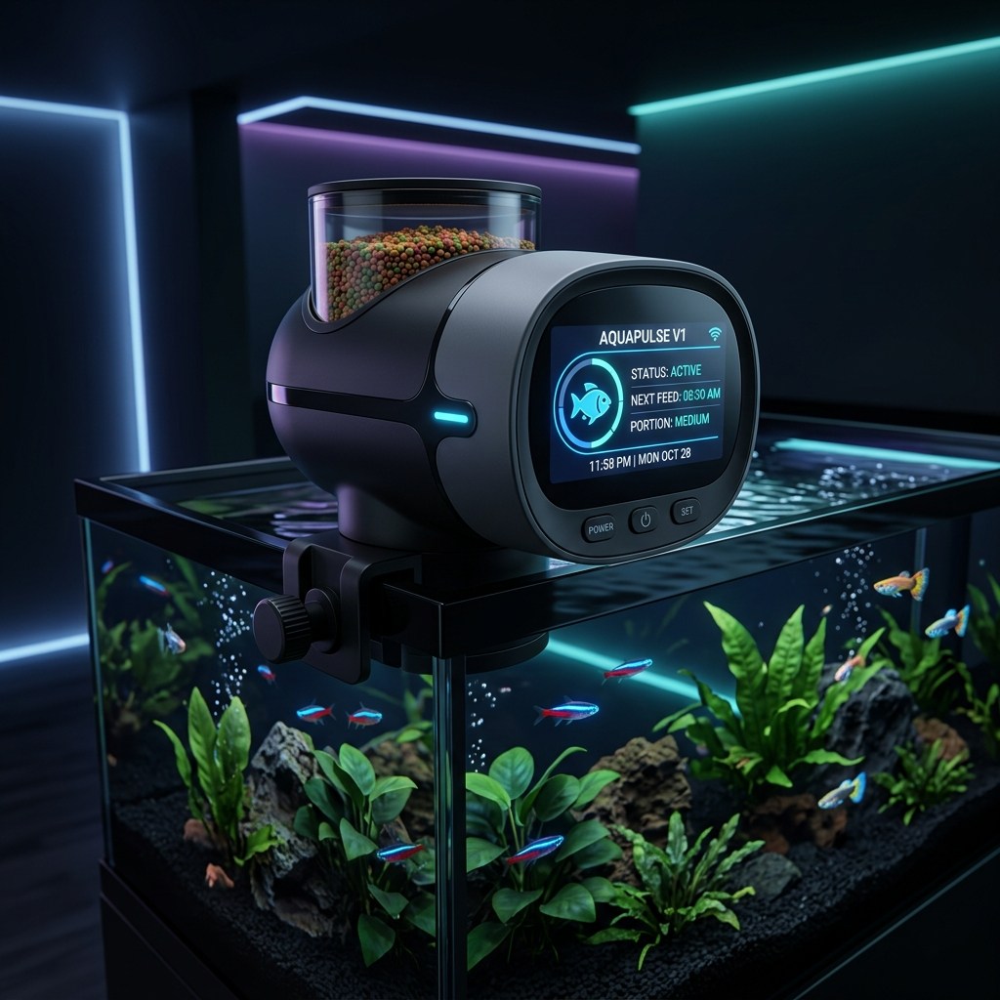
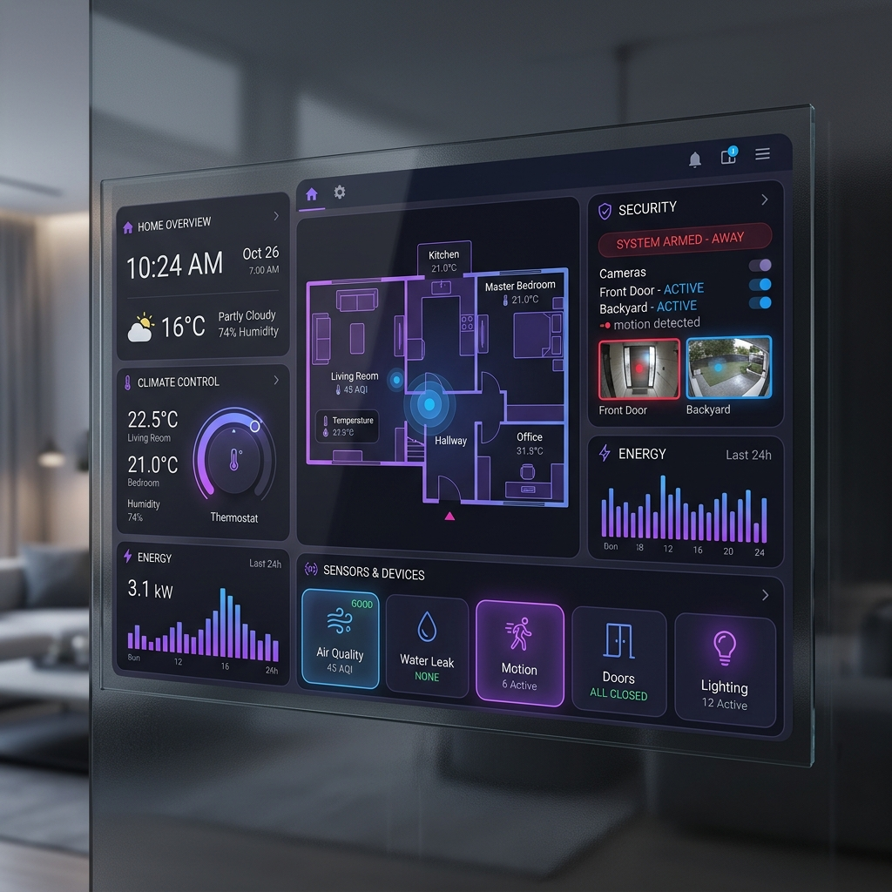

Hello, I am Aromal A Kurup an
Electronics and Communication Engineering 2nd-year student at Amal Jyothi College of Engineering. Passionate about Embedded Systems, Python programming, and building real-world hardware solutions.
Bridging hardware and software.
Scroll
My technical toolkit for designing advanced electronics and embedded systems.
Proficient in Python and C/C++. Writing clean, efficient logic for scripting, data processing, and microcontrollers.
Firmware development, hardware-software interfacing, and low-level programming for embedded systems.
Utilizing MATLAB for numerical computing, signal processing, and system simulations.
Designing digital circuits, working with IoT sensors, and rapid prototyping utilizing Arduino and related ecosystems.
A showcase of my hands-on hardware and software integration projects.

Designed and built a smart automated fish feeder utilizing a microcontroller. The system dispenses exact food amounts at scheduled intervals, reducing maintenance and ensuring precise feeding routines.

Developed an integrated IoT framework to monitor ambient home conditions like temperature, humidity, and security using various sensors. Programmed in Python to analyze data and trigger real-time alerts.